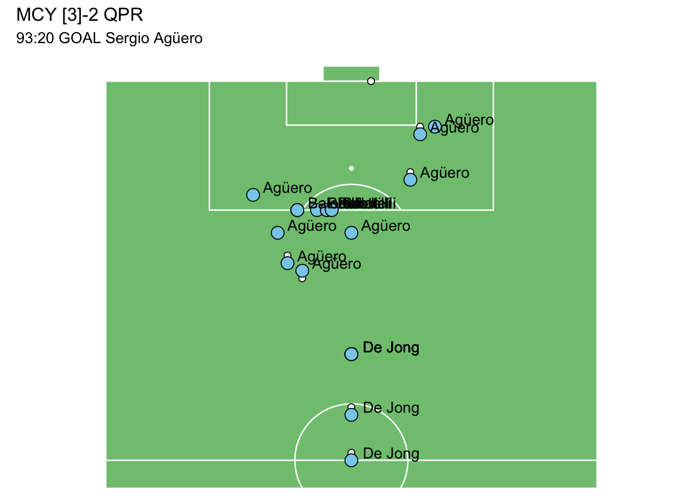
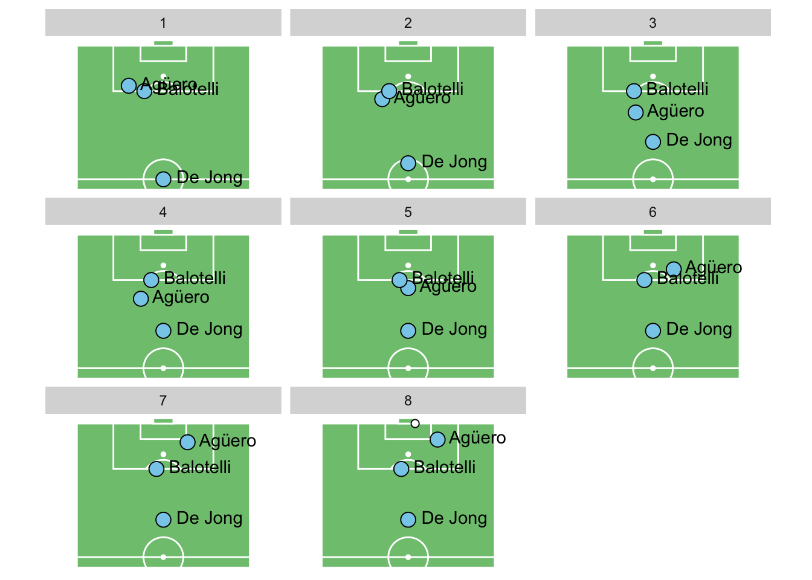
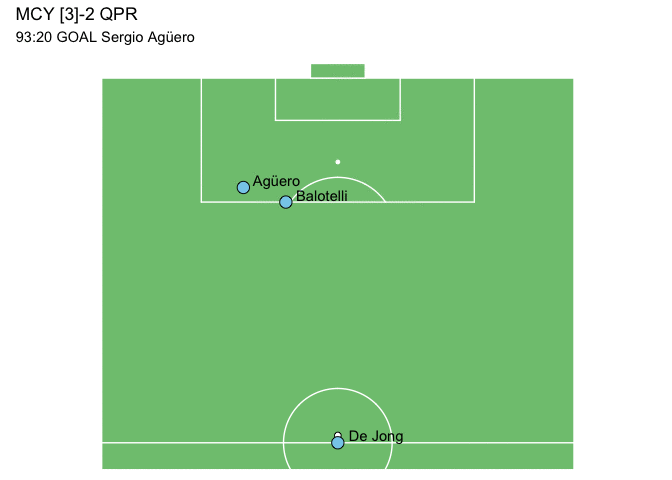

tl;dr
I used R to animate the goal that won Manchester City the 2011/12 Premier League title in breathtaking fashion.
Inspired by Ryo Nakagawara, who makes awesome R-related soccer content that you can find on his site and on Twitter.1
The ‘problem’
Soccer has run dry.
Leagues have been cancelled or decided on a contentious points-per-game basis given that there’s no precedent. The fate of the 2019/20 English Premier League season is still unknown.2
I figured it would be a good time to revisit a season that finished in the most emphatic fashion; one that was decided in the final minute of the final game.
The game
City and United were level on points at the top of the Premier League as they entered their final matches of the 2011/12 season. Only goal difference separated them.
| Pos | Team | Played | GD | Points |
|---|---|---|---|---|
| 1 | Manchester City | 37 | +63 | 86 |
| 2 | Manchester United | 37 | +55 | 86 |
As the game entered the closing stages, a dominant City somehow found themselves 2-1 down to a lacklustre Queens Park Rangers side.
After sustained pressure, Edin Dzeko scored a towering header from a corner after 92 minutes. The game was level at 2-2, but it wouldn’t be enough to win the title; one more goal was needed.
Meanwhile, Manchester United had won their concurrent game at Sunderland and had every right to think the title was theirs.
| Pos | Team | Played | GD | Points |
|---|---|---|---|---|
| 1 | Manchester United | 38 | +56 | 89 |
| 2 | Manchester City | 38 | +63 | 87 |
But after 93 minutes, City’s Nigel De Jong burst into QPR’s half. Sergio stepped forward, received the ball and beat his man. He passed to Mario Balotelli and continued his run into the box. Super Mario slid to the ground and pushed the ball into Agüero’s path.
The rest is history: Sergio received the ball, beat a slide tackle and smashed the ball into the goal. Cue commentator Martin Tyler screaming ‘AGÜEROOOOO!’.
| Pos | Team | Played | GD | Points |
|---|---|---|---|---|
| 1 | Manchester City | 37 | +64 | 89 |
| 2 | Manchester United | 37 | +56 | 89 |
City had done the impossible to win their first Premier League trophy and first top-flight title in 44 years.
Reliving the moment
So the sensible thing to do is to use R to make a gif of the player movements in the build-up to the goal.
You may have seen something like this before from Ryo Nakagawara and others. I took a slightly different approach to Ryo, but the result is basically the same.
You need three packages:3
- {ggplot2}, created by Hadley Wickham, to provide the plotting framework
- {ggsoccer}, by Ben Torvaney, for the grid and pitch theme
- {gganimate}, by Thomas Lin Pedersen, for animating each step and interpolating between them
# Load packages
library(ggplot2) # Create Elegant Data Visualisations Using the Grammar of Graphics
library(ggsoccer) # Plot Soccer Event Data
library(gganimate) # A Grammar of Animated Graphics
library(tibble) # Simple Data FramesI also used {tibble} to create data frames with tribble(), but this isn’t a requirement.
Set coordinates
You need to start with coordinate data for the players and ball. {ggsoccer} defaults to a 100- by 100-unit pitch on which to plot these data. But where do you get it from?
You could use Opta’s premium service for accessing player-tracking data. My approach was more… artisanal. I just watched some grainy YouTube videos and roughly guessed where the players were.
A really nice interactive tool that makes the process easier is the soccer event logger by Ben Torvaney, creator of {ggsoccer}.
Players
The first data frame contains each player’s coordinates, with a row for each frame of the final animation. I added the player name so it could be used as a label.
I chose to focus on the three active players in the build-up to the goal. This made the final graphic clearer, yes, but more importantly it meant I had fewer data points to input.
I created the data frame using tribble() from the {tibble} package because I found it easier to input the data in a row-wise fashion. It’s also easy to write a comment per line to explain what’s happening.
# Player position data
players <- tribble(
~frame, ~name, ~x, ~y, # column names
1, "De Jong", 50, 50, # advances from own half
2, "De Jong", 56, 50, # advances into oppo half
3, "De Jong", 64, 50, # passes to Agüero
4, "De Jong", 64, 50, # off the ball
5, "De Jong", 64, 50, # off the ball
6, "De Jong", 64, 50, # off the ball
7, "De Jong", 64, 50, # off the ball
8, "De Jong", 64, 50, # off the ball
1, "Agüero", 85, 70, # diagonal run to meet ball from De Jong
2, "Agüero", 80, 65, # diagonal run to meet ball from De Jong
3, "Agüero", 75, 60, # receives pass from De Jong
4, "Agüero", 76, 63, # beats defender, passes to Balotelli
5, "Agüero", 80, 50, # advances to edge of box
6, "Agüero", 87, 38, # receives pass from Balotelli
7, "Agüero", 93, 36, # shot
8, "Agüero", 94, 33, # goal
1, "Balotelli", 83, 61, # waiting on edge of box
2, "Balotelli", 83, 61, # waiting on edge of box
3, "Balotelli", 83, 61, # waiting on edge of box
4, "Balotelli", 83, 57, # waiting on edge of box
5, "Balotelli", 83, 55, # recieves pass from Agüero
6, "Balotelli", 83, 55, # passes to Agüero
7, "Balotelli", 83, 54, # off the ball
8, "Balotelli", 83, 54, # off the ball
)So each player has coordinates for each time step.
# Preview the data frame
head(players[order(players$frame), ])# A tibble: 6 × 4
frame name x y
<dbl> <chr> <dbl> <dbl>
1 1 De Jong 50 50
2 1 Agüero 85 70
3 1 Balotelli 83 61
4 2 De Jong 56 50
5 2 Agüero 80 65
6 2 Balotelli 83 61Ball
I put the coordinate data for the ball in a separate data frame. This made it easier to specify and modify separately the ball and player data.
# Ball position data
ball <- tribble(
~frame, ~x, ~y,
1, 51, 50, # De Jong possession
2, 57, 50, # De Jong pass
3, 74, 60, # receievd by Agüero
4, 77, 63, # Agüero pass
5, 83, 54, # received by Balotelli
6, 88, 38, # received by Agüero
7, 94, 36, # Agüero shot
8, 100, 46 # goal
)Graphics
The first step in producing the animation is to create a single plot object that contains all the points. {gganimate} takes the object and animates it frame by frame, interpolating the data points between each time step.
Static plot
To produce the plot object:
- Plot the pitch area
- Add ball data first so the points will appear ‘under’ the player points
- Add player points and labels
- Add a title
# Plot all the data
plot <-
ggplot() + # blank canvas
annotate_pitch( # plot 100 * 100 unit pitch
colour = "white", fill = "#7fc47f", limits = FALSE
) +
theme_pitch() + # theme removes plotting elements
coord_flip( # rotate and crop pitch
xlim = c(49, 101), ylim = c(-12, 112)
) +
geom_point( # add ball data
data = ball,
aes(x = x, y = 100 - y),
colour = "black", fill = "white", pch = 21, size = 2
) +
geom_point( # add player data
data = players,
aes(x = x, y = 100 - y),
colour = "black", fill = "skyblue", pch = 21, size = 4
) +
geom_text( # add player labels
data = players, aes(x = x, y = 100 - y, label = name),
hjust = -0.2, nudge_x = 1
) +
ggtitle( # add title
label = "MCY [3]-2 QPR",
subtitle = "93:20 GOAL Sergio Agüero"
)I’ve chosen to rotate the plot and crop it because we only need to see one half of the pitch. Note that this means the y-aesthetic for the points is set to 100 - y.
The output plot object is composed of all the frames that we set out in the player and ball data sets. You wouldn’t plot this object as-is, but here’s what it looks like:
plot
{gganimate} will take each time-step—specified by the frame variable—to render the animation. Here’s each of those frames from the player data.
plot + facet_wrap(~ frame) + ggtitle(NULL, NULL)
Animated plots
{gganimate} turns the static plot into an animation in one step.
The transition_states() function builds on top of the plot object. I specified the time-step variable; the durations for showing the frame and the interpolated frames between; and whether or not the animation should loop back to the start.
# Animate the plot
animation <-
plot + # the plot object
transition_states(
frame, # time-step variable
state_length = 0.01, # duration of frame
transition_length = 1, # duration between frames
wrap = FALSE # restart, don't loop
)You can use the animate() function to render it.
animate(animation)
AGÜEROOOOO!
You can save the result as a gif with anim_save(), which works like ggsave() from {ggplot2}: the default is to save the latest animation to your working directory.
anim_save("9320.gif")Luckily the gif keeps looping so you can keep watching until a decision is made on how the current Premier League season will end.
Environment
Session info
Last rendered: 2023-07-22 11:39:13 BSTR version 4.3.1 (2023-06-16)
Platform: aarch64-apple-darwin20 (64-bit)
Running under: macOS Ventura 13.2.1
Matrix products: default
BLAS: /Library/Frameworks/R.framework/Versions/4.3-arm64/Resources/lib/libRblas.0.dylib
LAPACK: /Library/Frameworks/R.framework/Versions/4.3-arm64/Resources/lib/libRlapack.dylib; LAPACK version 3.11.0
locale:
[1] en_US.UTF-8/en_US.UTF-8/en_US.UTF-8/C/en_US.UTF-8/en_US.UTF-8
time zone: Europe/London
tzcode source: internal
attached base packages:
[1] stats graphics grDevices utils datasets methods base
other attached packages:
[1] tibble_3.2.1 gganimate_1.0.8 ggsoccer_0.1.7 ggplot2_3.4.2
loaded via a namespace (and not attached):
[1] gtable_0.3.3 jsonlite_1.8.7 dplyr_1.1.2 compiler_4.3.1
[5] crayon_1.5.2 Rcpp_1.0.11 tidyselect_1.2.0 magick_2.7.4
[9] progress_1.2.2 scales_1.2.1 yaml_2.3.7 fastmap_1.1.1
[13] R6_2.5.1 labeling_0.4.2 generics_0.1.3 knitr_1.43.1
[17] htmlwidgets_1.6.2 munsell_0.5.0 pillar_1.9.0 rlang_1.1.1
[21] utf8_1.2.3 stringi_1.7.12 xfun_0.39 cli_3.6.1
[25] withr_2.5.0 magrittr_2.0.3 tweenr_2.0.2 digest_0.6.33
[29] grid_4.3.1 rstudioapi_0.15.0 hms_1.1.3 lifecycle_1.0.3
[33] prettyunits_1.1.1 vctrs_0.6.3 evaluate_0.21 glue_1.6.2
[37] farver_2.1.1 fansi_1.0.4 colorspace_2.1-0 rmarkdown_2.23
[41] tools_4.3.1 pkgconfig_2.0.3 htmltools_0.5.5 Footnotes
Also a fellow builder of {brickr} soccer players.↩︎
But do check out posts by Ben Torvaney and Robert Hickman on predicting Premier League outcomes with R.↩︎
An aside: I used the {annotater} RStudio Addin by Luis D Verde to annotate these library calls.↩︎
Reuse
CC BY-NC-SA 4.0